This guide explains each Workforce system in implementation order: identity first,
then scheduling, time, leave, payroll readiness, compliance operations, and project
work. The screenshots are from the local Papa's Saloon workspace.
Team is the source of identity
Workforce should not create a separate universe of users. Employee profiles, rates,
leave, punch cards, and assignments are attached to Team users wherever possible.
Work locations are Workforce-owned
Clock-in geofencing uses Workforce work locations. These are intentionally separate
from warehouse or booking locations because they control attendance policy.
Managers operate from exceptions
The module is designed around warnings, pending corrections, open requests, expiring
training, and missing coverage so managers can review what needs action.
Foundation
Employees
The Employees tab is the employee master profile. It connects Team identity to
Workforce-specific employment data so every other system has a reliable staff record.
Team-linked profile
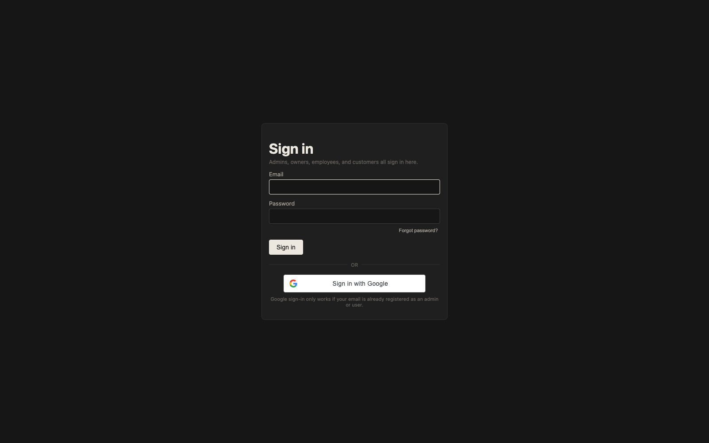
What the sections do
Employee selector: chooses a Team user or existing employee profile to view.
Profile workspace: shows or completes employment details for the selected person.
Operational context: provides the staff identity used by scheduling, punching, payroll, training, and asset assignment.
Typical workflow
Add the person in Team and give them the right access level.
Open Workforce Employees and complete their active employee profile.
Use that profile across shifts, punch records, leave, rates, courses, and assets.
Why this is first: every other Workforce system depends on a real staff
identity. If a Team user is not linked to an active employee profile, dashboard clock-in
and employee-specific actions should be blocked.
Planning
Staff & Schedule
This tab plans weekly coverage and applies compliance rules before shifts are treated
as usable operational schedules.
Schedule compliance
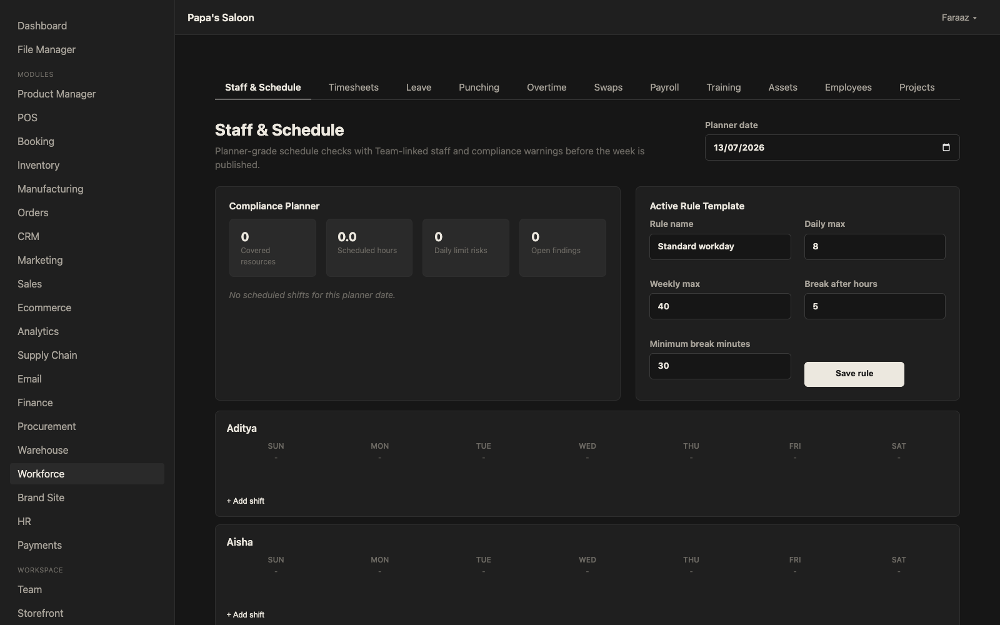
What the sections do
Planner date: sets the schedule week or planning date being reviewed.
Compliance Planner: summarizes covered resources, scheduled hours, daily limit risks, and open findings.
Active Rule Template: defines daily maximum hours, weekly maximum hours, and required break rules.
Staff rows: show each employee's week and provide the entry point for adding shifts.
Typical workflow
Select the planning date.
Confirm or edit the active compliance rule template.
Add shifts for each employee and review warnings before publishing.
Live time capture
Punching
Punching handles clock-in, clock-out, breaks, geofenced work locations, live status,
correction requests, and the audit ledger for time events.
Geolocked attendance
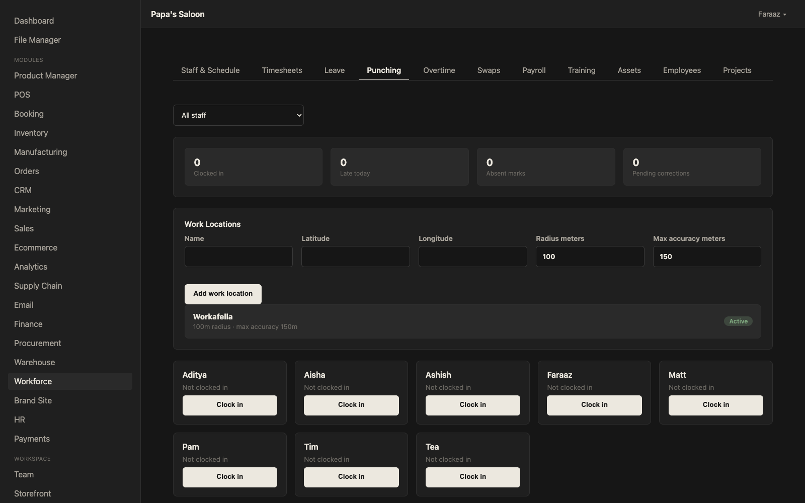
What the sections do
Staff filter: narrows the view to all staff or one employee.
Status metrics: track clocked-in employees, late arrivals, absences, and pending corrections.
Work Locations: configures allowed clock-in locations with latitude, longitude, radius, and accuracy limits.
Employee punch cards: show each employee's current status and manager-assisted clock action.
Time Ledger: records the audit trail of punch events.
Correction Queue: lists requested fixes that need review.
Typical workflow
Create at least one Workforce work location.
Employees clock in from their dashboard when they are inside an allowed geofence.
Managers review missing punches, corrections, and exception states from this tab.
Important: these locations are not warehouse locations. They exist for
attendance control, so owners and managers can define where a person is allowed to start
work.
Manual time records
Timesheets
Timesheets provide a week-based view of time entries and a controlled way to log
manual work periods when a punch record is not enough.
Weekly ledger
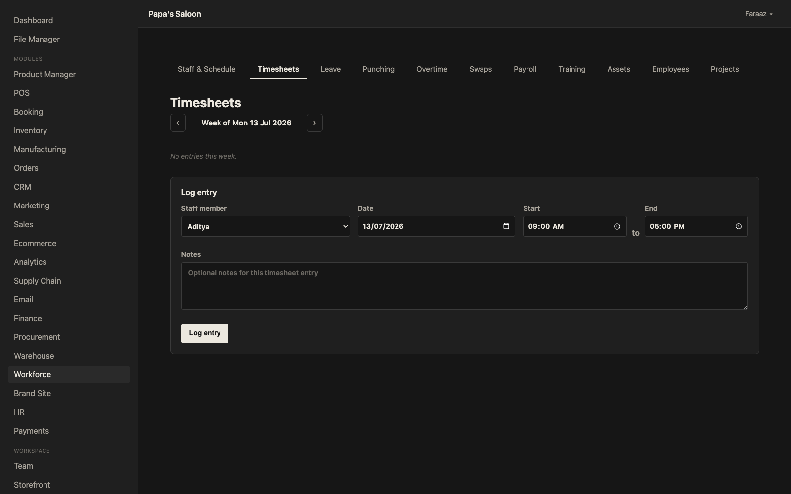
What the sections do
Week controls: move between timesheet weeks.
Entries list: shows logged work periods for the selected week.
Log entry form: records staff member, date, start time, end time, and optional notes.
Typical workflow
Open the correct week.
Select the employee and enter the work period.
Use notes for manager context, exception reasons, or payroll review comments.
Absence management
Leave
Leave captures employee requests, status filtering, and manager review. It keeps
absence requests visible next to staffing and payroll readiness.
Requests and approvals
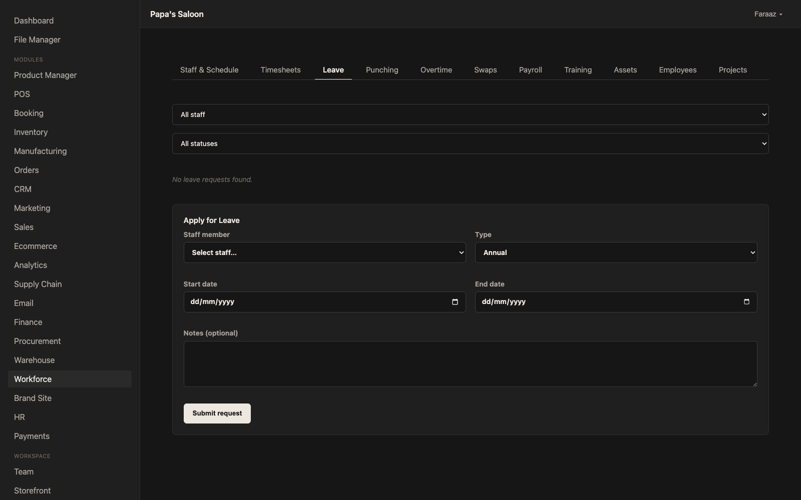
What the sections do
Staff filter: limits requests to one employee or all employees.
Status filter: separates pending, approved, rejected, or all requests.
Apply for Leave: records the staff member, leave type, start date, end date, and notes.
Typical workflow
Employee or manager submits a leave request.
Manager filters pending requests and approves or rejects them.
Approved leave becomes part of staffing and payroll context.
Exception pay review
Overtime
Overtime tracks extra hours and threshold checks so managers can review out-of-policy
or pay-impacting work before payroll totals are finalized.
Threshold review
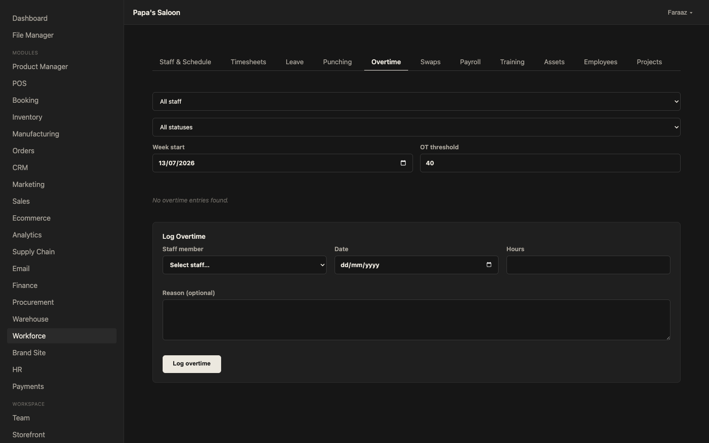
What the sections do
Staff and status filters: focus the overtime list by employee and approval state.
Week start and OT threshold: define the period and the hour threshold being evaluated.
Log Overtime: records employee, date, hours, and optional reason.
Typical workflow
Set the week and threshold.
Review calculated or logged overtime entries.
Approve, reject, or annotate overtime before payroll reporting.
Schedule changes
Swaps
The Swap Board lets employees offer shifts and managers review whether schedule
changes preserve coverage, eligibility, and compliance.
Coverage-safe changes
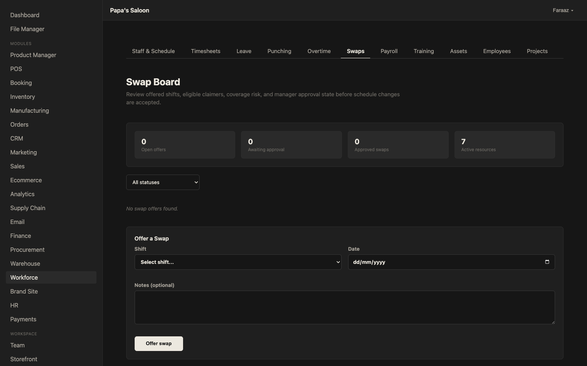
What the sections do
Swap metrics: summarize open offers, approvals waiting, approved swaps, and active resources.
Status filter: narrows the board to the relevant swap state.
Offer a Swap: records the shift, date, and optional notes for a proposed change.
Typical workflow
Employee offers a shift for swap.
Eligible staff claim or respond to the offer.
Manager approves only if coverage and compliance remain acceptable.
Payroll readiness
Payroll
Payroll is a tracking and export readiness area. It stores rates, periods, and
approved totals, but does not execute payment.
Tracking only
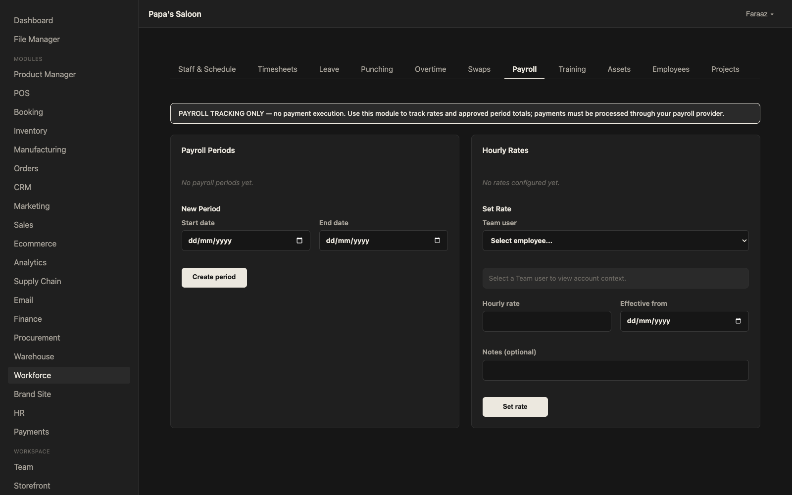
What the sections do
Tracking notice: clarifies that actual payment processing happens outside this module.
Payroll Periods: creates and reviews start/end windows for payroll calculation.
Hourly Rates: stores employee rate, effective date, and notes for audit context.
Typical workflow
Create a payroll period.
Set or update employee hourly rates.
Use approved time, overtime, and leave context to prepare payroll exports or reports.
Compliance operations
Training
Training manages course definitions, completions, and compliance status so staff
readiness is visible before work is assigned.
Courses and expiry
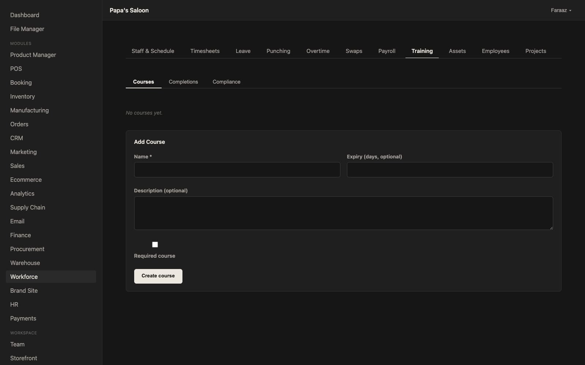
What the sections do
Courses: creates training items with optional expiry windows.
Completions: records which employees have completed which courses.
Compliance: highlights missing, expired, or soon-to-expire requirements.
Required course: marks a course as mandatory for compliance tracking.
Typical workflow
Create required courses for the role or workplace.
Log completions for each employee.
Review compliance before scheduling sensitive work.
Equipment control
Assets
Assets tracks company-owned items, employee assignments, condition, and maintenance
so equipment accountability sits next to employee operations.
Assignments and condition
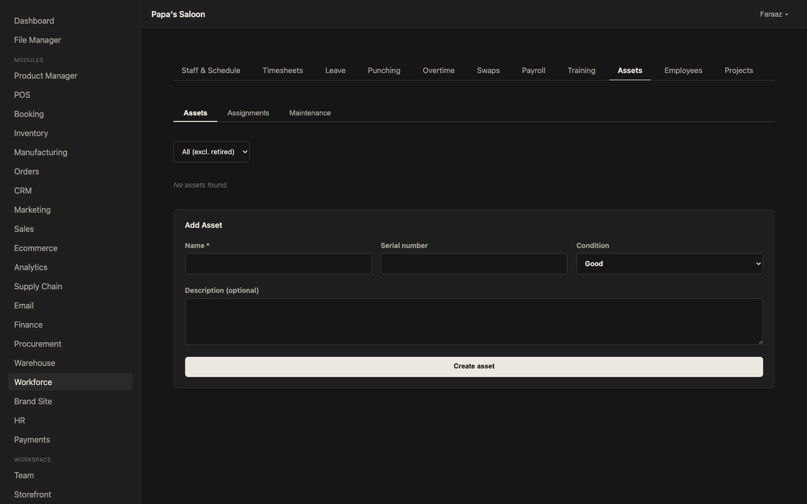
What the sections do
Assets: creates and filters asset records.
Assignments: links assets to employees and return state.
Maintenance: records upkeep, repair, or inspection activity.
Add Asset: captures name, serial number, condition, and description.
Typical workflow
Create an asset with serial and condition details.
Assign it to a Team-linked employee.
Track returns, condition changes, and maintenance events.
Work execution
Projects
Projects connects workforce capacity to project work, budgets, documents, tasks,
risk, and AI-generated planning drafts.
Project operations
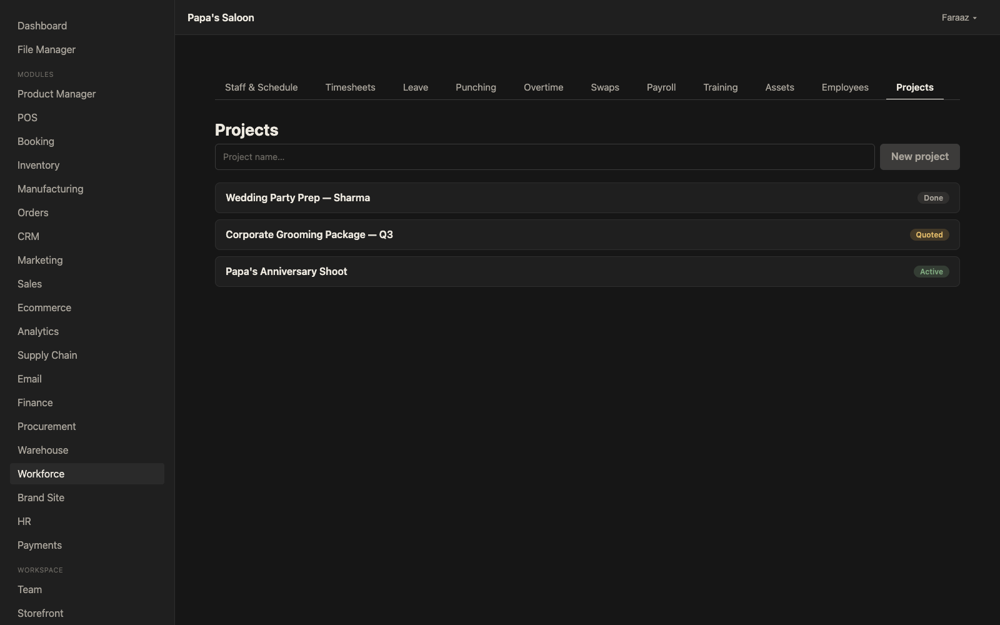
What the sections do
Overview: shows project summary and operating context.
Budget: tracks financial planning for project work.
Documents: stores project-related references.
Tasks & Risk: records tasks, due dates, and project health score.
AI Planner: creates a draft task plan from a plain-language project description.
Typical workflow
Create or open a project.
Add budget, documents, and task/risk details.
Use the AI Planner for a first draft, then review before execution.
End-to-end flow
How the systems fit together
The module works best when setup follows the dependency chain instead of the tab
order. Start with people, then policies, then time capture, then payroll and
compliance.
Step 1
Add users in Team and complete Workforce employee profiles.
Step 2
Configure schedules, compliance rules, and work locations.
Step 3
Capture time through dashboard punching, corrections, and timesheets.
Step 4
Review leave, overtime, payroll readiness, training, assets, and projects.